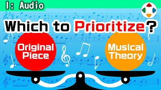
速览
上次讲了音乐监修，这次像是续篇。改编老街机游戏《雅典娜》的曲子时，罕见地陷入了泥潭：调整像是朝着和监修内容相反的方向进行。结果是从他称为「主旋律」的东西的误解开始的。这是完成曲；这是 A 旋律，这是 B 旋律——哪个是主旋律、哪个是伴奏？在游戏中接触或听红白机版时，感觉是 A；但从音乐的见解来说是 B。确实，但无论原曲怎样，即使偏离音乐手法和常识，当时在原作中听到的曲子才是正确的曲子，难办啊。另外这首曲有个奇妙部分：先合着拍子，第二次变成反拍；不知为何会这样，但很有趣，当然《大乱斗》的音乐也再现了这种地方。这次的话题看来要请 SNK 检查了，那么顺便也说说同为 SNK 的《超能力战士》的曲子：1987 年，据说世界上第一个认真唱 BGM 的游戏。《特别版》中这首歌由古代祐三改编，演唱是加奈子，歌曲录音他也在场；可以说是让人想起 80 年代歌谣曲、相当讲究的曲子。和原曲一样准备了日版和英版：日版原曲有三段，英版只有一段。《大乱斗》版怎么做？日版做了三段；英版第一段后，第二段是器乐，第三段人声回来。为什么？因为原曲中第一段结束后会切换为内置音源的音乐。高音萨克斯很帅。日版与英版的差异在语调上也相当讲究：有所谓「日式英语」，在海外的人看来可能是奇怪的发音，但它是像借字一样发音的。总之，被爱的原曲，原曲全部是对的，必须不损害每位玩家持有的体验；想改编曲子，就别忘了这一点。
1. 《雅典娜》的泥潭 0:03
改编老街机游戏《雅典娜》的曲子时，罕见地陷入了泥潭：调整像是朝着和监修内容相反的方向进行。
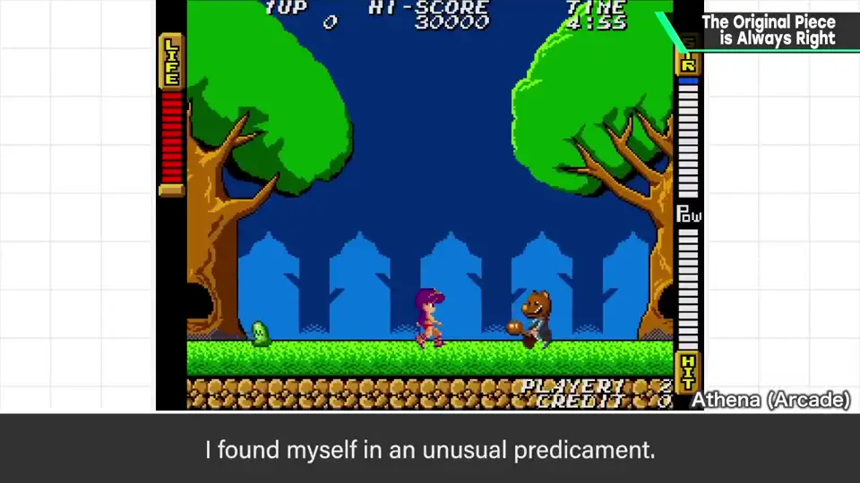
结果是从他称为「主旋律」的东西的误解开始的。
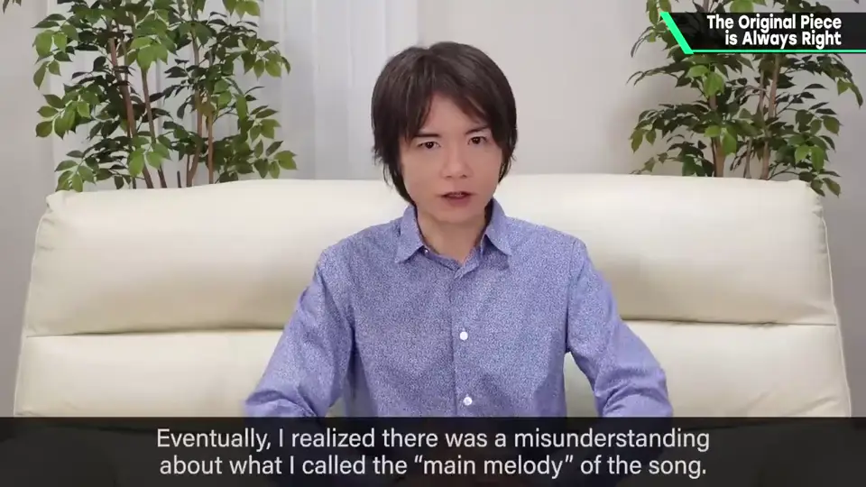
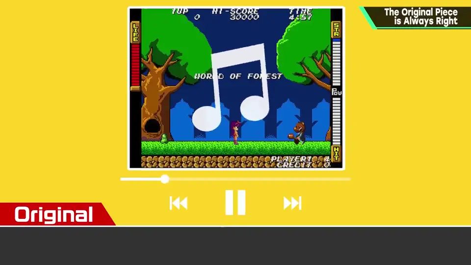
2. A 旋律还是 B 旋律 0:50
这是 A 旋律，这是 B 旋律——哪个是主旋律、哪个是伴奏？
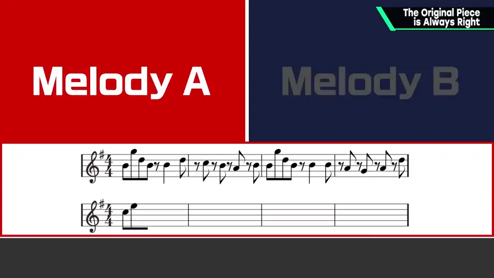
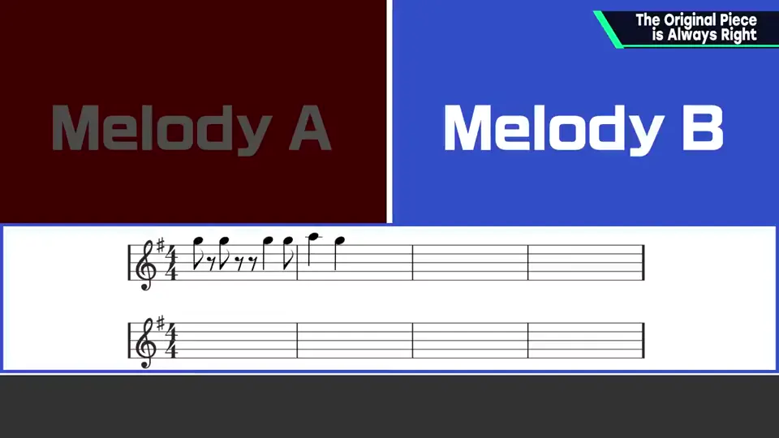
在游戏中接触或听红白机版时，感觉是 A；但从音乐的见解来说是 B。
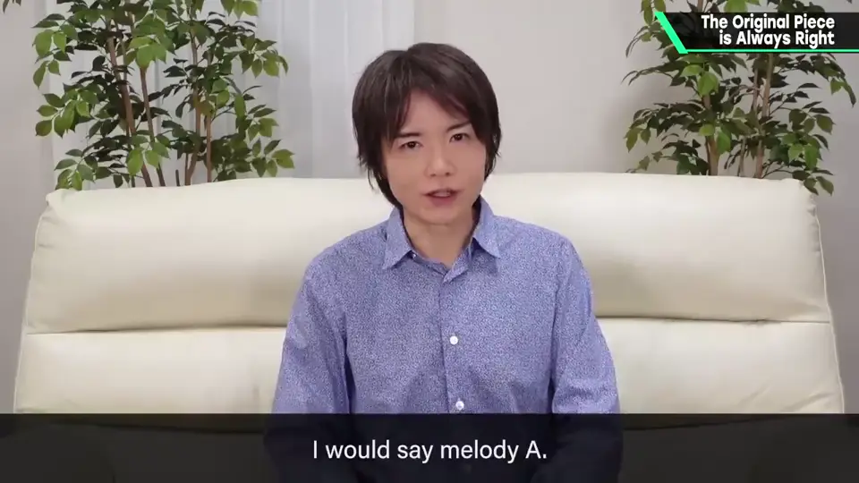
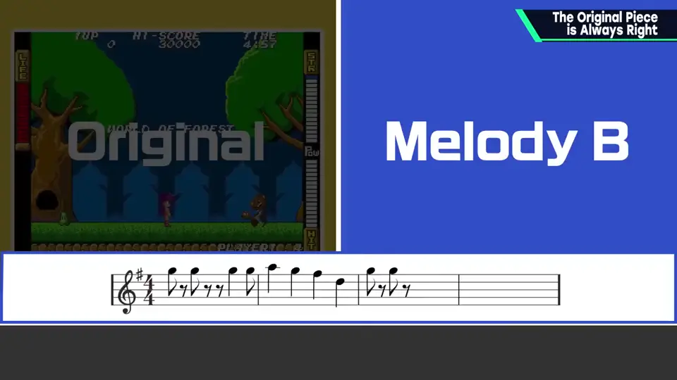
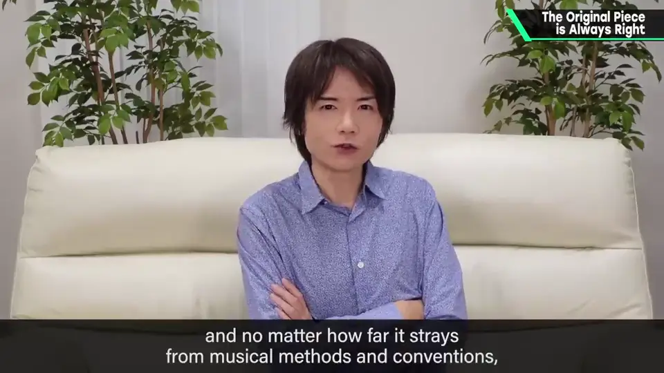
3. 反拍的奇妙段落 2:02
这首曲有个奇妙部分：先合着拍子，第二次变成反拍。
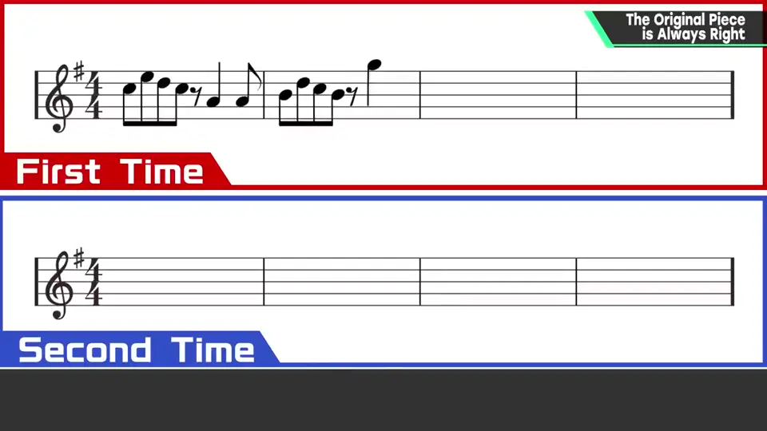
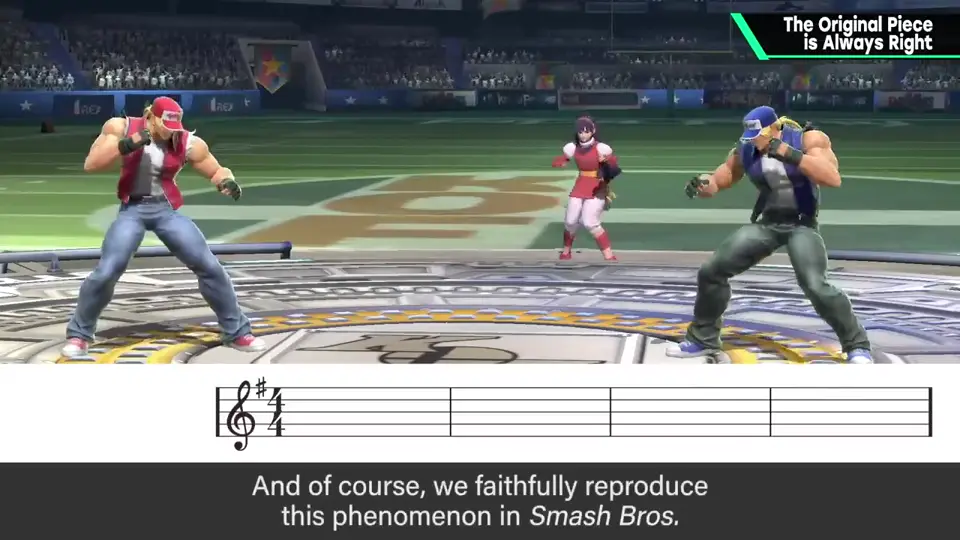
不知为何会这样，但很有趣。当然《大乱斗》的音乐也再现了这种地方。
4. 《超能力战士》 2:35
顺便也说说同为 SNK 的《超能力战士》：1987 年，据说世界上第一个认真唱 BGM 的游戏。
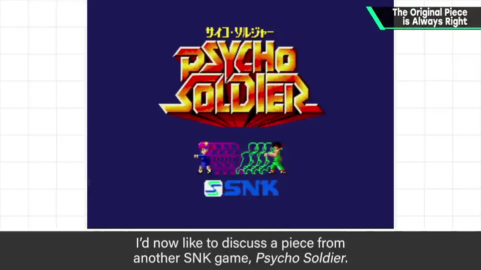
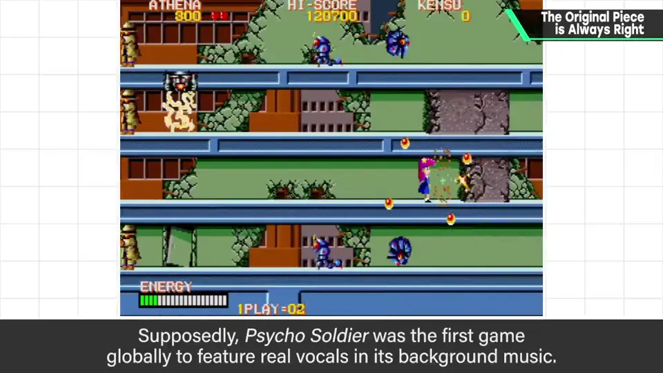
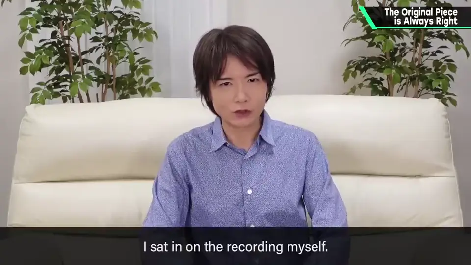
《特别版》中这首歌由古代祐三改编，演唱是加奈子，录音他也在场；是让人想起 80 年代歌谣曲、相当讲究的曲子。
5. 日版与英版 3:36
| 版本 | 原曲 | 《大乱斗》版 |
|---|---|---|
| 日语版 | 三段 | 三段 |
| 英语版 | 一段（之后切换内置音源） | 第一段人声 → 第二段器乐 → 第三段人声回归 |
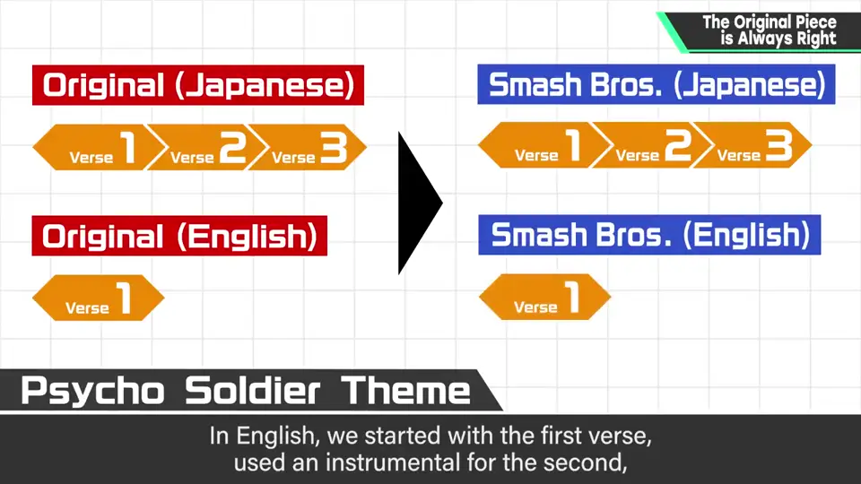
为什么？因为原曲中第一段结束后会切换为内置音源的音乐。
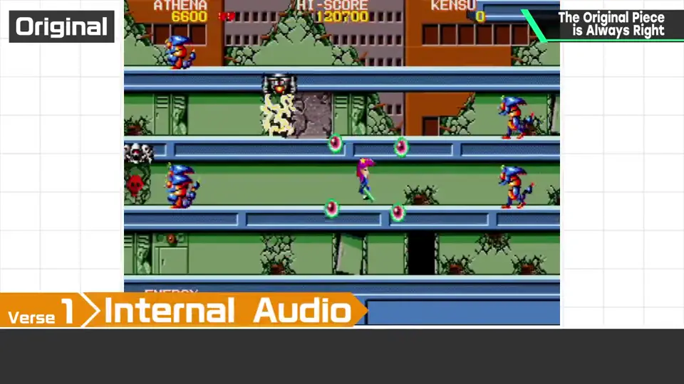
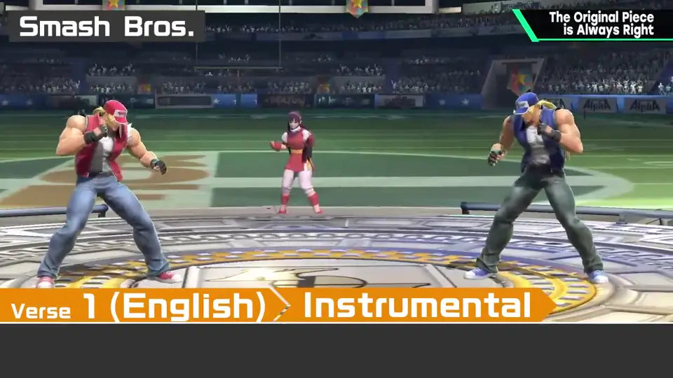
高音萨克斯很帅。日版与英版的差异在语调上也相当讲究：有所谓「日式英语」，在海外看来可能是奇怪的发音，但它是像借字一样发音的。
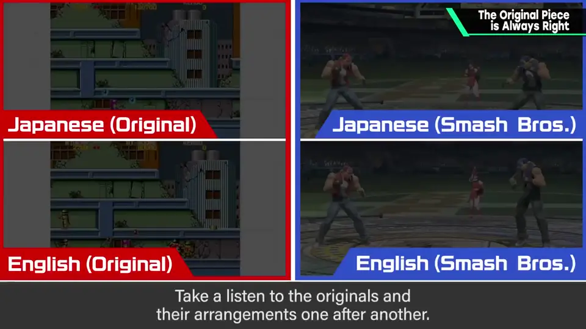
6. 原曲全部是对的 6:11
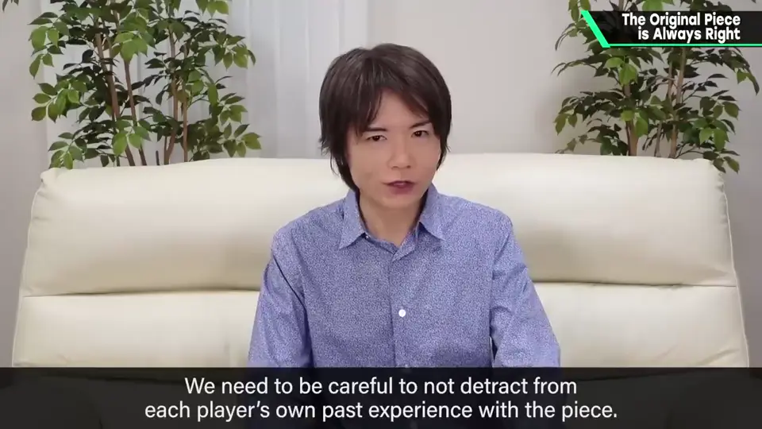
自测题
1. 《雅典娜》改编的误解是什么？
玩家听来主旋律是 A，乐理上却是 B；原作中听到的才是正确的。 1:30
2. 《超能力战士》英语版在《大乱斗》中怎么处理？为什么？
第一段人声、第二段器乐、第三段人声回归；因为原作第一段后切换为内置音源。 4:00
3. 本集的核心原则是什么？
原曲永远是对的，不要损害玩家各自的体验。 6:20